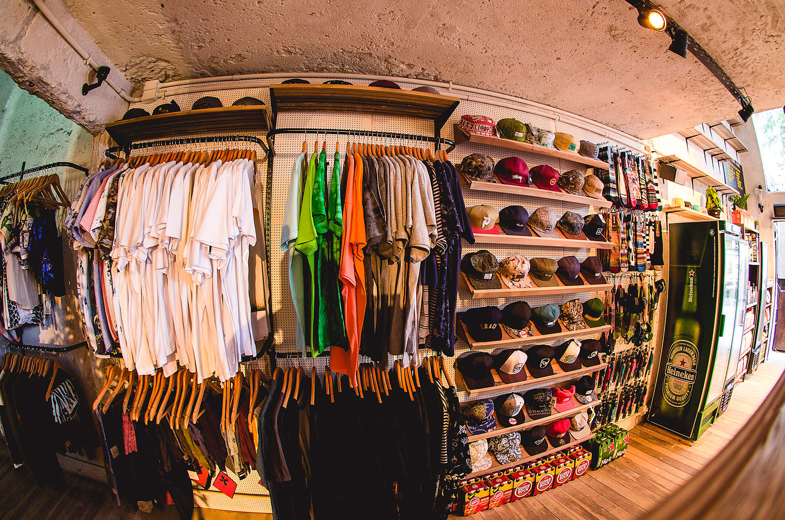
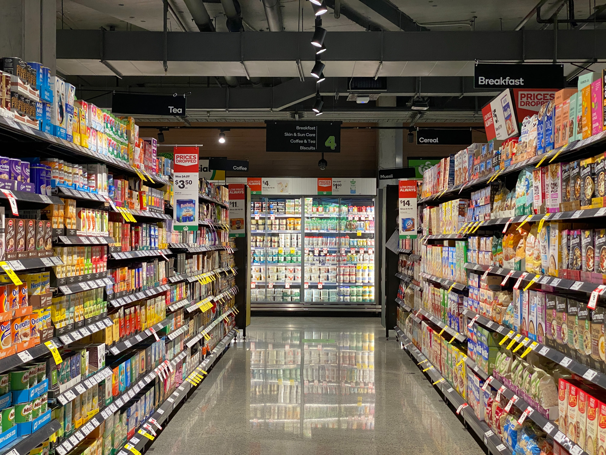

- 
- 
-

Sobre
Os Supermercados Sakuragi tem tudo o que você precisa em um só lugar, desde itens de alimentação e de higiene até produtos como colchões e ferramentas.
Aqui sua satisfação é garantida, então se algo faltar em sua casa já sabe onde procurar!
O primeiro supermercado foi criado em 2007 na cidade de João Pessoa pelo empresário japonês Ichirou Sakuragi, que mora no Brasil desde 2003, em parceria com Rodrigo Rodrigues, economista natural de João Pessoa.
5 anos após a abertura, o dono começou a expandir seus negócios, e hoje em dia a Rede Sakuragi é uma das redes de supermercado mais bem sucedidas da Paraíba!